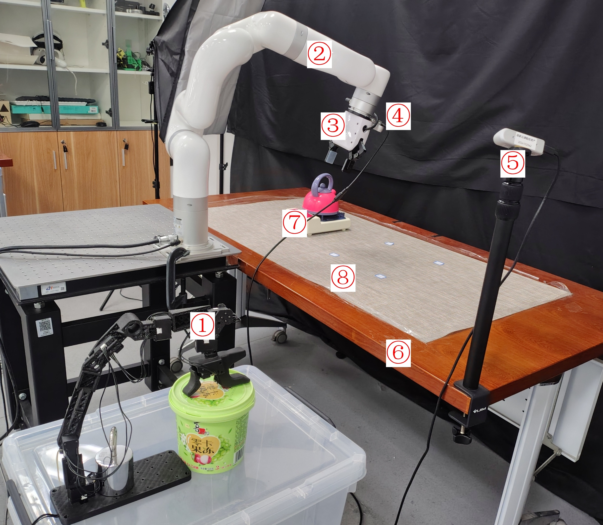
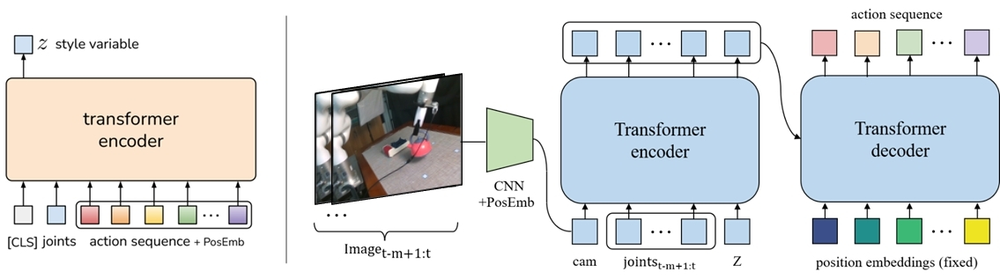
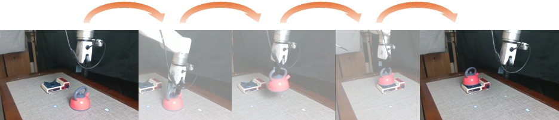
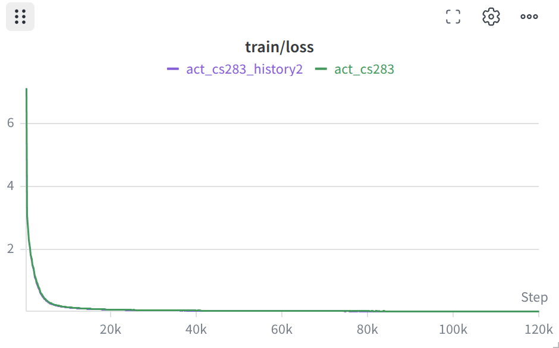
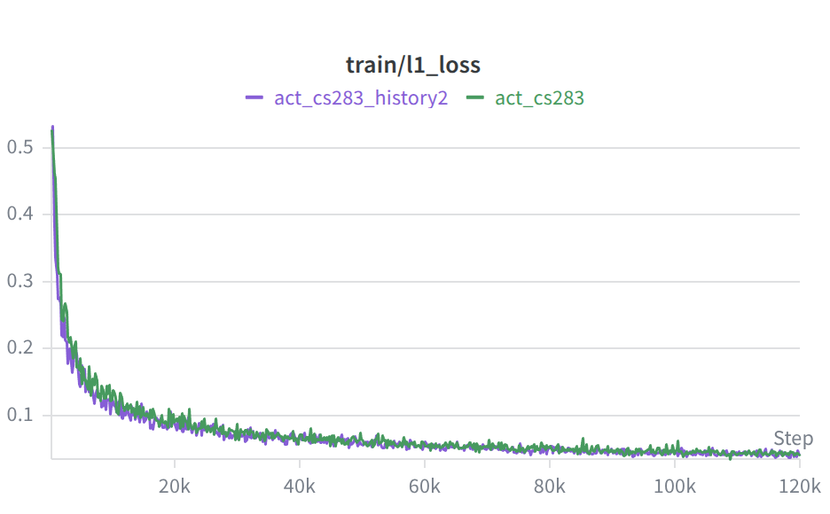
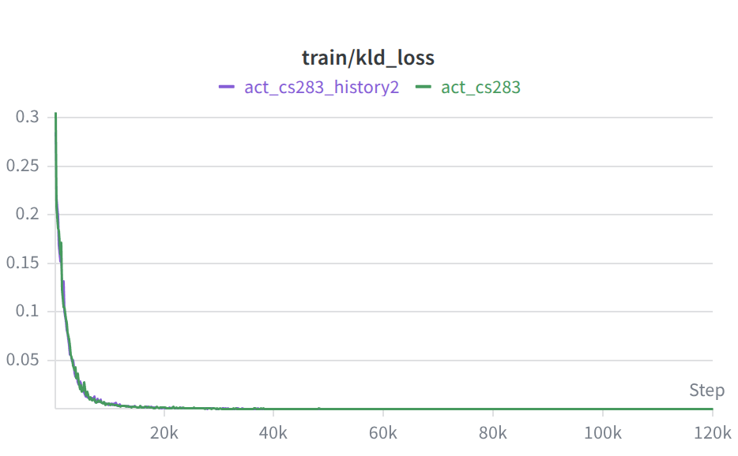

Teleoperated demonstration of the kettle-on-stove task.
ShanghaiTech SIST · Robotics 2026 Course Project
Teaching an xArm6 to fetch from two RGB views
A Gello leader teleoperates an xArm6, two RealSense cameras watch the table, and an Action Chunking Transformer learns to pick up a toy kettle and place it on a toy stove — from 2D vision and proprioception only.
The trained ACT policy autonomously performs the kettle-on-stove task on the real xArm6.
Overview
A small tabletop task with the hard parts of real manipulation.
We deliberately use only 2D RGB observations — no depth, no 3D reconstruction — so the policy must learn grasp alignment, lifting, and precise placement from partial views and gripper occlusion. We train a vanilla ACT baseline and a history-aware variant that conditions on the last two observation steps, and evaluate both on hardware.
50teleoperated demonstration episodes
2RealSense RGB views (arm + front)
100actions per predicted chunk
120ktraining steps per policy
97.5%best end-to-end success rate
Method
One loop records human skill; ACT turns it into a policy.
A Gello leader arm drives the xArm6 follower while robot state and two RGB streams are recorded at 30 Hz into a LeRobot dataset. Offline, ACT maps the two camera views and proprioception to a short chunk of future joint actions, using a ResNet18 backbone, a Transformer encoder–decoder, and a CVAE latent. Our history-aware variant adds a spatio-temporal positional encoding so the model can attend over the current and previous frame.


Data collection
Demonstrations recorded directly on the physical setup.
The Gello leader gives an intuitive control interface; follower, cameras, and dataset writer run in one synchronized loop, capturing the full approach → grasp → lift → transfer → place → retreat motion.
Synchronized dual-view capture of the tabletop workspace.
Results
Both policies reach near-ceiling success on hardware.
Each policy was evaluated over 40 trials with the kettle uniformly sampled across the workspace. A trial counts as a success only if it is collision-free, places the kettle within ±3 cm and upright, and the arm returns home — all within 90 s.

| Policy | Successful trials | Success rate |
|---|---|---|
| Vanilla ACT | 39 / 40 | 97.5% |
| History-aware ACT (n_obs = 2) | 38 / 40 | 95.0% |



The added history did not measurably improve this near-saturated task — and the single baseline failure bent the kettle handle, confounding the comparison. The full analysis is in our final report.